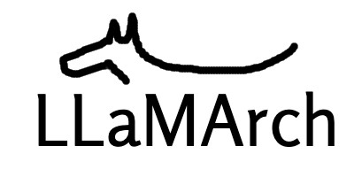

LLaMArch

Minimal, Building Blocks for Large Language Models!
LLaMArch is a Python library that provides a set of tools and patterns for building and deploying large language models (LLMs) in a variety of domains. It is designed to be modular and extensible, allowing users to easily incorporate LLMs into their projects and customize them to specific requirements.
Why LLaMArch?
LLaMArch stands out due to its modular and extensible design, which is not fully addressed by existing libraries. Key advantages include:
- Design Patterns: Common patterns and workflows are provided, allowing users to easily build and deploy LLMs in various domains.
- Component Integration: Combines LLMs with memory systems, agent coordination, and fine-tuning in one framework.
- Adaptability: Allows for customization to specific workflows and domains, unlike libraries that focus only on text generation or embeddings.
- Support: Provides simple interfaces for various LLM vendors and vector databases, allowing for seamless integration.
- Extensibility: Allows for easy addition of new components and patterns, enabling the creation of complex architectures.
GitHub Repository
The link to the repository can be found here
Whom to contact?
Please direct your queries to gpavanb1 for any questions.
Acknowledgements
Special thanks to discussions and the article by Vincent Koc for inspiring this project.